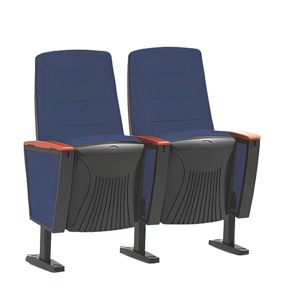
KURSI AUDITORIUM ZECO
Pilihan 16 model kursi auditorium Zeco untuk aula, kampus, ruang seminar, dan gedung pertemuan. Kirim ukuran ruangan Anda, kami bantu menentukan model dan jumlah yang sesuai.
Ratusan kursi akan dipakai lama oleh banyak orang. Ukuran, tata letak, dan bahan yang tepat menentukan kenyamanan sekaligus daya tahannya.
Kapasitas & Tata Letak
Jumlah kursi tidak sesuai kapasitas, jarak antarbaris terlalu sempit atau justru boros ruang.
Kenyamanan
Kursi terasa kurang nyaman untuk acara berjam-jam karena busa tipis atau sandaran tidak ergonomis.
Lantai Berundak
Ukuran dan dudukan harus pas agar kursi terpasang rata dan pandangan ke panggung tidak terhalang.
Perawatan
Bahan pelapis cepat kotor, mudah sobek, atau sulit dibersihkan setelah dipakai rutin.
Beberapa model pilihan. Lihat seluruh 16 model di halaman produk.

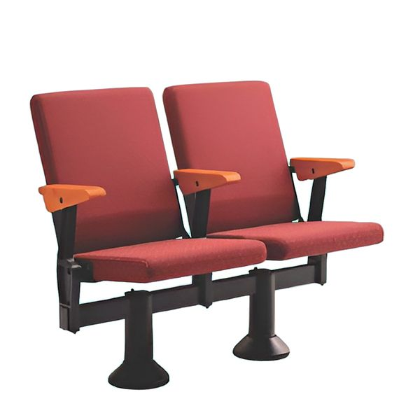
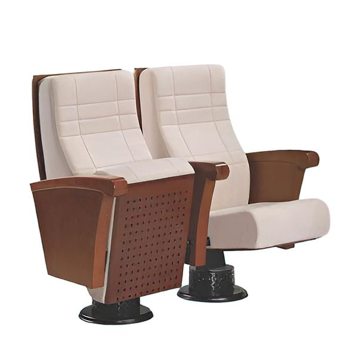
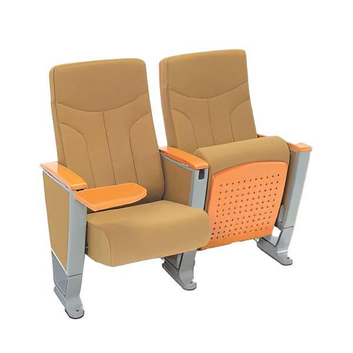
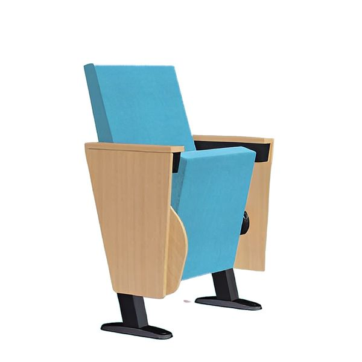
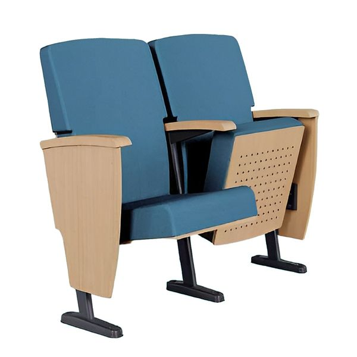
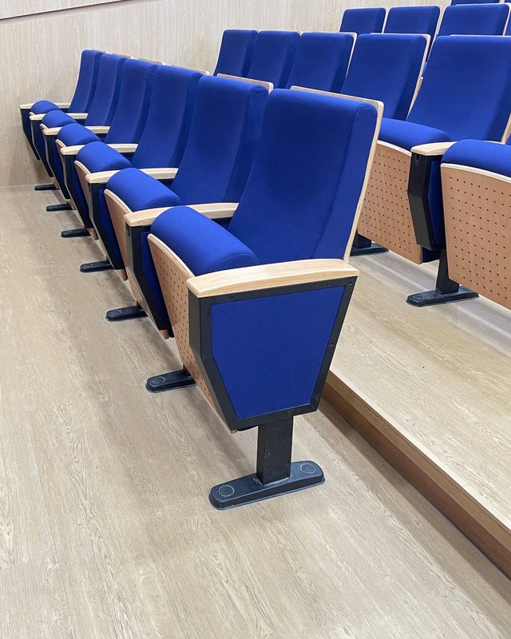
Kenyamanan Duduk
Kursi dipakai berjam-jam, jadi bentuk dan bantalan menentukan apakah peserta betah sampai acara selesai.
Yang perlu dicek
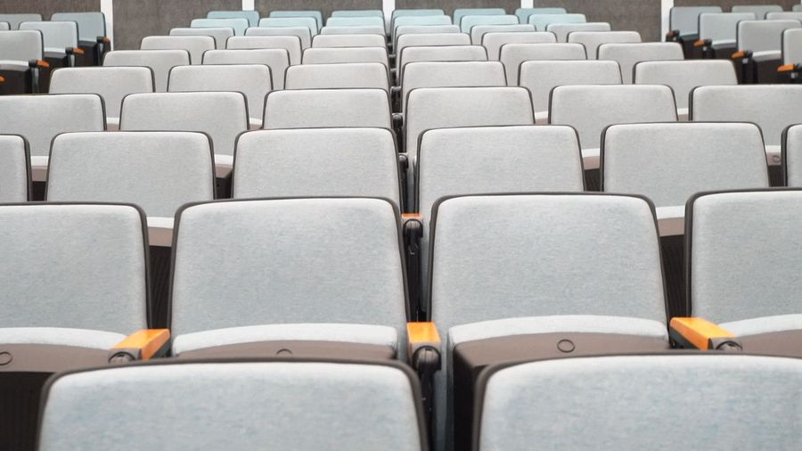
Tata Letak & Kapasitas
Ukuran kursi dan jarak antarbaris menentukan berapa banyak kursi yang muat tanpa membuat ruangan sesak.
Yang perlu dicek
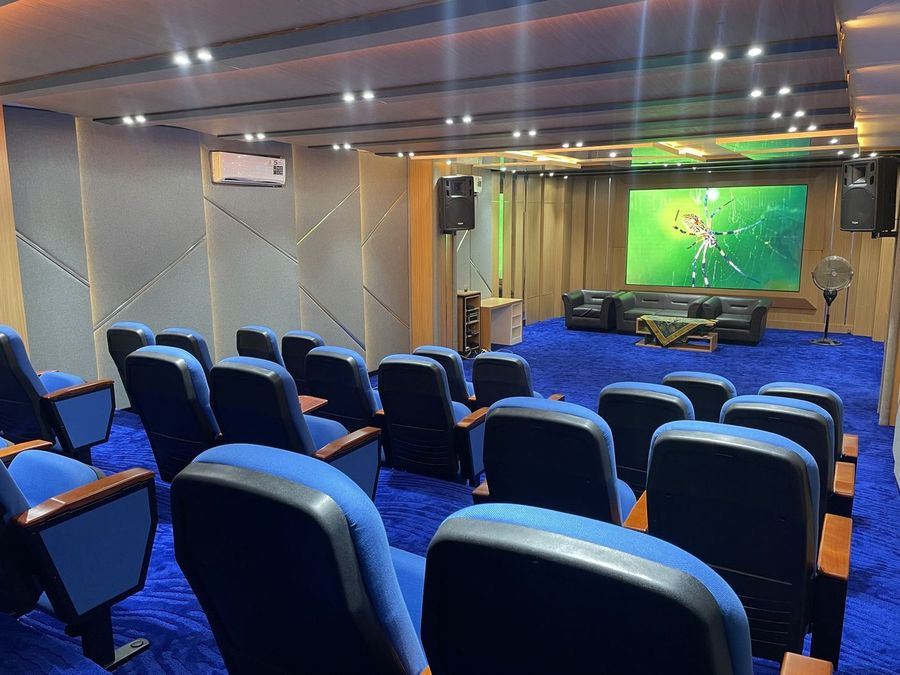
Pandangan ke Panggung
Setiap peserta sebaiknya bisa melihat panggung dan layar tanpa terhalang kepala orang di depannya.
Yang perlu dicek
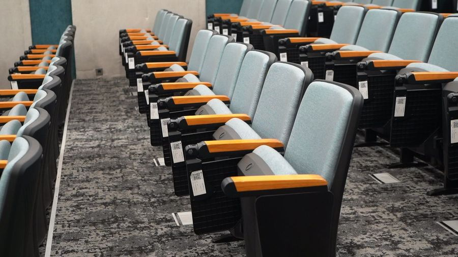
Daya Tahan & Perawatan
Kursi auditorium dipakai ratusan orang. Rangka dan pelapis yang kuat menekan biaya perbaikan.
Yang perlu dicek
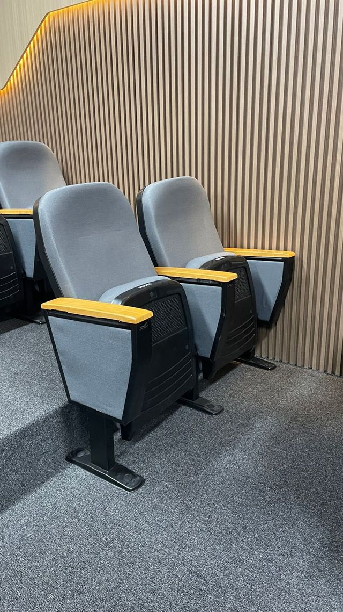
Fitur Tambahan & Garansi
Fitur kecil sering baru terpikir setelah kursi terpasang, jadi sebaiknya ditentukan sejak awal.
Yang perlu dicek
 TAHAP 1 · MEMILIHMemilih Kursi untuk Ruang Seminar: Apa yang Perlu DiperhatikanRuang seminar dipakai untuk presentasi, pelatihan, dan diskusi. Ini hal-hal yang perlu dipertimbangkan sebelum memilih kursinya.Baca panduan →2
TAHAP 1 · MEMILIHMemilih Kursi untuk Ruang Seminar: Apa yang Perlu DiperhatikanRuang seminar dipakai untuk presentasi, pelatihan, dan diskusi. Ini hal-hal yang perlu dipertimbangkan sebelum memilih kursinya.Baca panduan →2 TAHAP 2 · MENATAMenata Kursi Auditorium Berundak: Pandangan, Lorong, dan PemasanganPanduan singkat menata kursi auditorium berundak agar semua peserta dapat melihat ke depan dengan nyaman dan aman.Baca panduan →3
TAHAP 2 · MENATAMenata Kursi Auditorium Berundak: Pandangan, Lorong, dan PemasanganPanduan singkat menata kursi auditorium berundak agar semua peserta dapat melihat ke depan dengan nyaman dan aman.Baca panduan →3 TAHAP 3 · MERAWATCara Merawat Kursi Auditorium Agar Awet dan Tetap RapiPerawatan rutin yang sederhana membantu kursi auditorium tetap nyaman dan terlihat baru lebih lama.Baca panduan →
TAHAP 3 · MERAWATCara Merawat Kursi Auditorium Agar Awet dan Tetap RapiPerawatan rutin yang sederhana membantu kursi auditorium tetap nyaman dan terlihat baru lebih lama.Baca panduan →Berikut jawaban atas pertanyaan yang paling sering kami terima, mulai dari pilihan model, cara meminta penawaran, sampai pengiriman dan pemasangan.
Pertanyaan Anda belum terjawab? Hubungi kami lewat WhatsApp, tim kami siap membantu.
Kami menyediakan kursi auditorium merek Zeco. Daftar 16 model ada di halaman Produk, dan ketersediaan dapat Anda tanyakan melalui WhatsApp.
Kirim ukuran ruangan atau denah, perkiraan jumlah kursi, dan jenis acara melalui WhatsApp. Kami akan memberikan rekomendasi model dan penawaran harga.
Bisa. Kirimkan denah atau ukuran ruangan Anda, lalu kami bantu menghitung perkiraan jumlah kursi dan susunan barisnya.
Jumlah kursi bergantung pada luas ruangan, lebar kursi, jarak antar baris, dan lebar lorong. Kami membantu perhitungannya agar kapasitas dan kenyamanan seimbang.
Ya, silakan hubungi kami untuk kebutuhan proyek dengan jumlah kursi banyak agar kami siapkan penawaran yang sesuai.
Silakan tanyakan ketersediaan pengiriman dan pemasangan sesuai lokasi Anda melalui WhatsApp.

Ceritakan ukuran ruangan dan kebutuhan acara Anda. Kami bantu memilihkan model kursi auditorium Zeco yang sesuai dengan kebutuhan dan anggaran Anda.